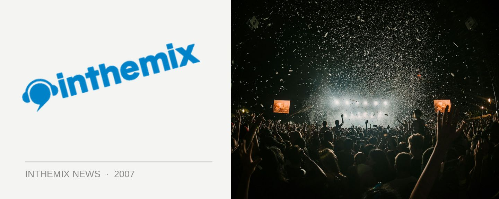

Lineup announced for Homebake 2007
The annual all-Aussie rock event Homebake staged in the domain will take place on December 8. The ladies will be taking centrestage this year with headline performances from the reformed Divinyls as well as Missy Higgins and Sarah Blasko, with Cut Copy the Midnight Juggernauts heading up the dance contingent of what’s been announced so far.
This year there will be four stages at the event – Main Stage, The Big Top, The Dome & The Hopetoun Stage – as well as a cinema tent, international food fair, market stalls, rides, artist signing tent and roving performers. Tickets go on sale from 9am Aug 20th from Ticketek and it’s sold out in a matter of hours in the past, so it goes without saying you should have your credit cards at the ready!
Another interesting development is that for the first time, Homebake will be an over-18s event. The organisers claim this is because of increasingly restrictive licensing laws that have made it impossible to keep it an all-ages festival anymore.
Homebake takes place on Saturday December 8th in The Domain, and the lineup so far includes…
Divinyls
Missy Higgins
Cut Copy
Gotye
Sarah Blasko
Josh Pyke
Midnight Juggernauts
Paul Kelly
The Beautiful Girls
Angus & Julia Stone
Paul Dempsey (Something For Kate)
The Bumblebeez
Soft Tigers
Pnau
Operator Please
Behind Crimson Eyes
Muscles
Ed Kuepper & The Kowalski Collective
Mammal
Red Eye Society